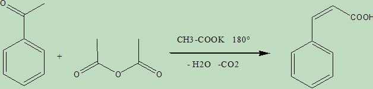
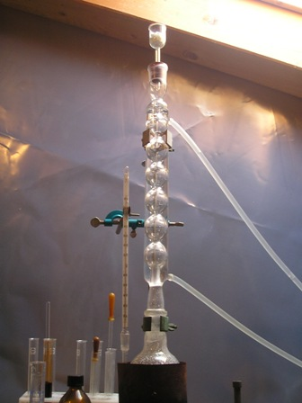
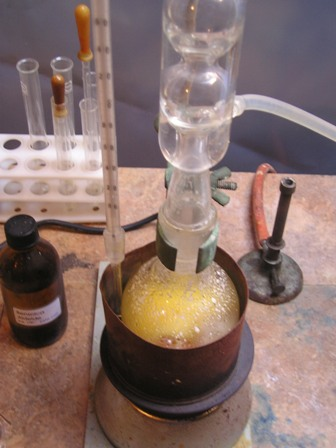
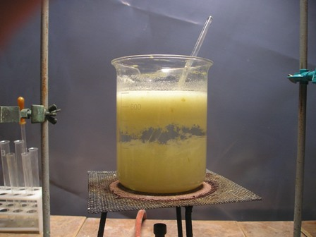
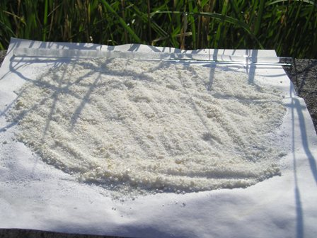

Nel 1868 William Henry Perkin scoprì una reazione delle aldeidi aromatiche che è preziosa per la sintesi degli acidi a,ß-insaturi: se si fa condensare una aldeide aromatica con l'anidride di un acido alifatico e col sale alcalino dello stesso acido, si ottiene appunto un acido insaturo, e questa reazione ha preso il nome dal grande chimico inglese, suo scopritore.
Per chi volesse sapere (ma esisterà un volontario così coraggioso...?) cosè un acido insaturo o una aldeide aromatica o altre amenità del genere, basta consultare Google...
Tralasciando in questa sede prettamente operativa meccanismi e considerazioni teoriche, la reazione globale per l'acido cinnamico è la seguente:

Ecco quanto occorre per la sintesi abbastanza laboriosa di questo interessante acido, la cui corrispondente aldeide (aldeide cinnamica C6H5-CH=CH-CHO) costituisce il componente principale dell'aroma della cannella:
- aldeide benzoica
- anidride acetica
- potassio acetato anidro
- vetreria opportuna
Prima della sintesi vera e propria va preparato l'acetato di potassio anidro, riscaldando a 150° in forno il sale normale triidrato. Esso prima fonde nella sua acqua di cristallizzazione e poi lentamente anidrifica; lasciarlo in forno almeno tre ore e poi velocemente polverizzarlo ancora caldo in un mortaio e conservarlo ermeticamente chiuso.
Questo sale è estremamente igroscopico e si inumidisce in pochi secondi: fare la pesata necessaria alla sintesi e l'aggiunta operando alla massima velocità possibile.

- In un pallone da 250 ml con refrigerante a ricadere e tappo a CaCl2 si introducono 42 ml di benzaldeide, 50 ml di anidride acetica e 21 g di potassio acetato anidro.Si agita vigorosamente e si riscalda la miscela in bagno d'olio o di sabbia a 170-180° per quattro ore, ogni tanto agitando. Alla mix ancora calda (80-100°) sotto energica agitazione si aggiunde del Na2CO3 solido fino a svluppo di parte della CO2 e poi si versa la miscela in 300 ml di acqua, si riscalda e si tiene a leggera ebollizione.

Continuare ad aggiungere Na2CO3 (non ho pesato, ma ce ne vuole una buona quantità) agitando vigorosamente fino a raggiungere pH 8.Si separa del solido ed anche a pH alcalino rimarrà insolubile una parte gialla leggera resinosa galleggiante, da eliminare pazientemente per decantazione o pipettando il liquido, sempre quasi all'ebollizione. La resa ne risente, ma si evita la decolorazione con carbone animale ed il prodotto finale è quasi bianco e puro. Inutile filtrare in questa fase perchè per raffreddamento si intasano immediatamente filtro e imbuto.

Si deve ottenere (a caldo, eventualmente aggiungere acqua fino ad un volume totale di circa 500 ml) un liquido limpido solo leggermente giallino.
La leggera e continua ebollizione in recipiente aperto durante tutte le operazioni contribuisce a far evaporare in corrente di vapore la benzaldeide non reagita.
Si aggiunge a questo punto lentamente acido cloridrico al 25% fino a fino a scomparsa dell'evoluzione di CO2 e decisa acidificazione del liquido.
Ad ogni aggiunta precipita l'acido cinnamico, bianco appena giallino. Si raffredda (meglio in ghiaccio) e si filtra, lavando molto bene con la necessaria acqua fredda. In queste condizioni l'acido cinnamico per essendo leggero è facilissimo da filtrare, anche per gravità, e non è indispensabile il buchner (forse è la sostanza più facilmente filtrabile che ho mai trovato).
Si può ricristallizzare da una mix 1:1 acq./etanolo. p.f. 133°- Solubilità a 25° 1/2000 in acq., 1/6 etanolo.
La mia resa è stata di 20 g di acido cinnamico (59%, in linea con la bibliografia), sotto forma di leggerissimi cristallini, di odore molto leggero ma buono e aromatico che diluito ricorda vagamente la cinnamaldeide.
Quando asciutto è appena appena giallino, e considerato che non è stato decolorato con carbone animale (come da normale procedura) ritengo che la sua purezza sia perfettamente accettabile per i nostri usi.
Ecco quì sotto l'acido cinnamico che si sta tranquillamente asciugando al sole.

2 commenti